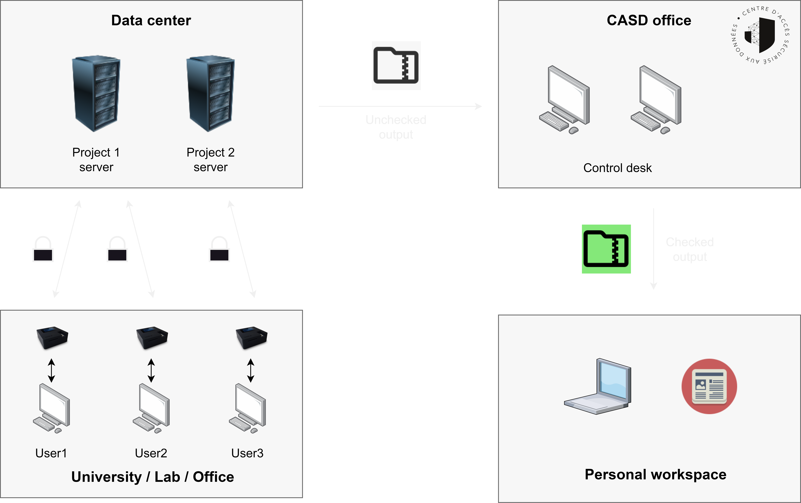
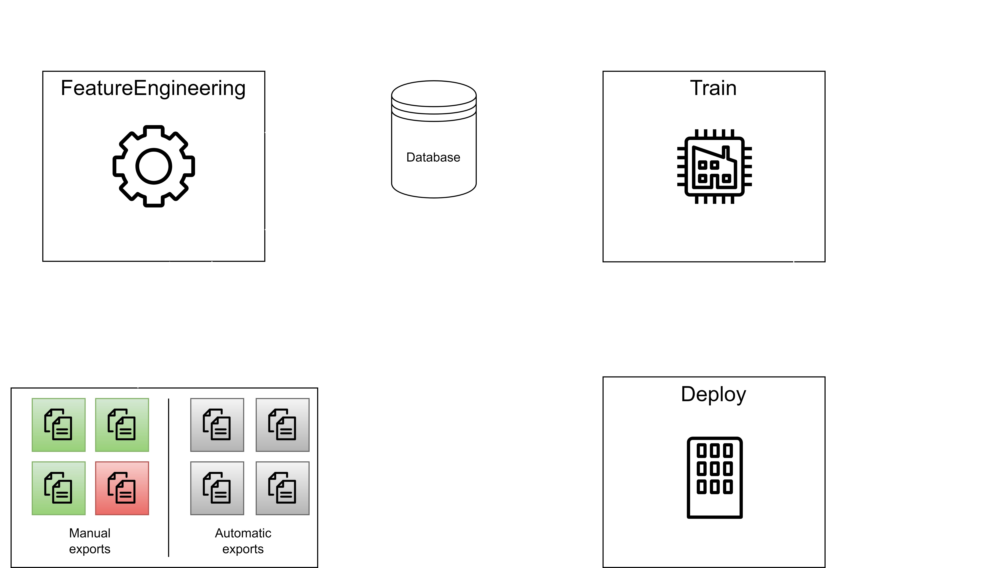

Un modèle d'apprentissage au service de la détection des fuites de données
Titouan Rigaud
Contexte
Bienvenue dans le contrôle d'exports
Le système manuel en place
Processus d'apprentissage

Un modèle complet
Methodologie de l'apprentissage
- Préparation/génération
- Validation
- Analyse
- Modélisation
- Entrainement
- Evaluation
- Déploiement
Parralélisation et banque de modèles
Un conteneur pour les contrôler tous
Kubernetes

Demonstration
Apprentissage continu
Combattre la dérive d'un modèle en production
“La précision de votre modèle est à son maximum jusqu'à ce que vous commenciez à l'utiliser. Ensuite, elle décroit car le monde sur lequel le modèle a été entrainé change. ”
David Talby - 2019 - Forbes
Why Machine Learning Models Crash And Burn In Production
L'inadéquation entre données de production et données d'entrainement est la cause de l'échec des modèles à l'étape de production
Commment lutter ?
- Monitorer des variations dans les données de test
- Detecter la chute de performance du modèle
- Entrainer un autre modèle avec des données plus proches du réel